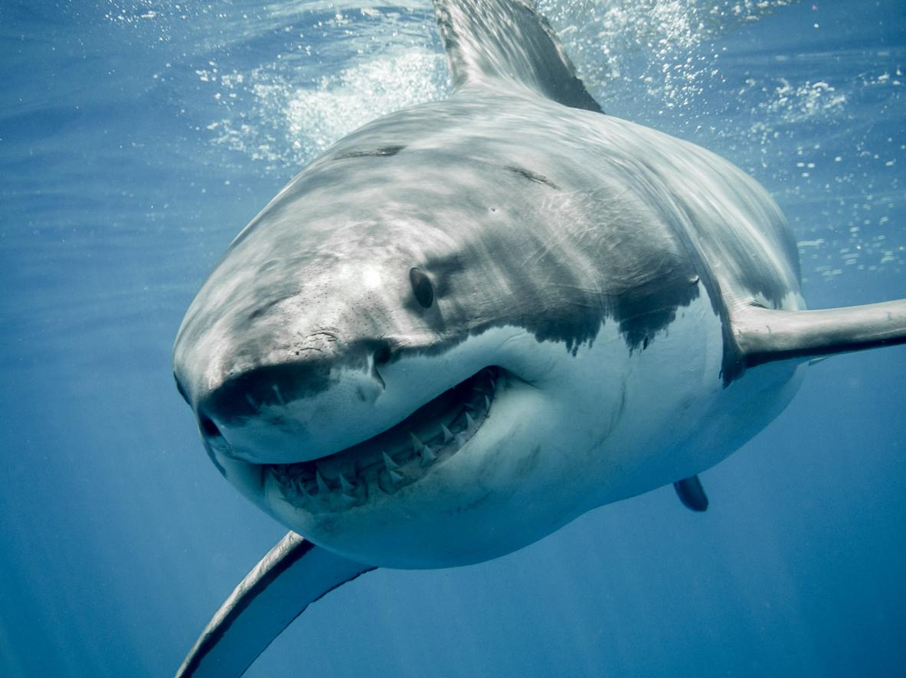
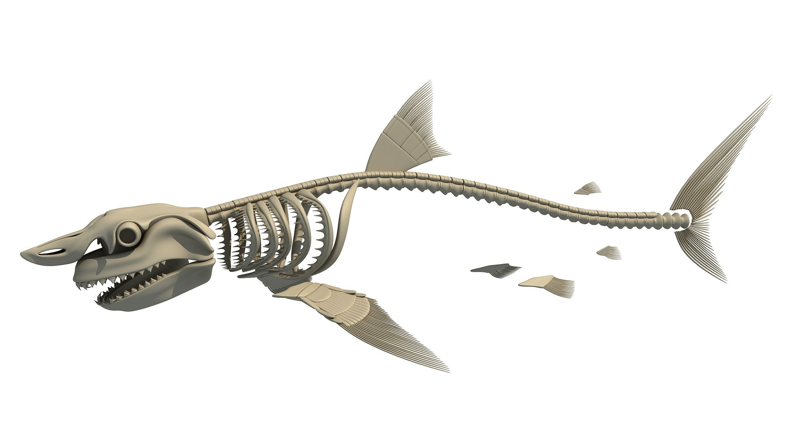

Tubarão-branco
Informações
Peso: 500kg-1100kg
Classe: Chondrichthyes
Tamanho: 4 a 7 metros
Tempo de vida: 40 a 70 anos

Trata-se de um peixe cartilaginoso da ordem Lamniforme e família Lamnidae, que possui alguns costumes únicos não presentes em outros tubarões. É também altamente perceptivo, capaz de detectar suas presas a grandes distâncias. Este peixe-espada, no entanto, é afetado hoje pela intervenção humana, um aspecto que, infelizmente, é repetitivo e influencia no declínio populacional da biodiversidade animal. Se deseja obter mais informação sobre o tubarão branco, descobrir curiosidades e saber mais sobre seu estado atual de conservação, siga lendo esta ficha do PeritoAnimal!

Demonstração do esqueleto